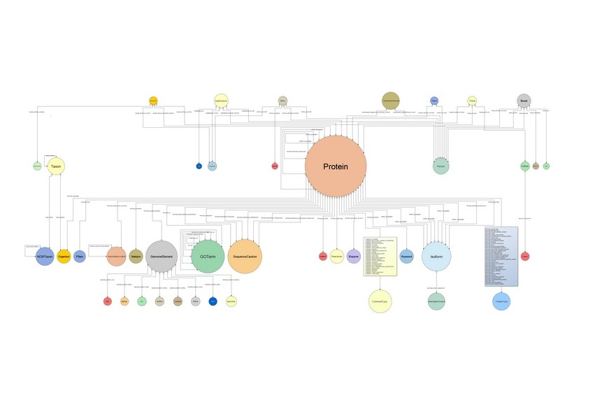

Bio4j is a bioinformatics graph-based data platform integrating most data available in the most representative open data sources around protein information available today.
Need for massive direct access to protein information
more and more data!
As other data sources were becoming a bottleneck they were being added to Bio4j
First it was Uniprot KB, then Uniref and we didn’t stop yet :)
numbers
109 edges
2 × 108 nodes
6 × 108 properties
150 edge types
40 node types
Bio4j structure
Bio4j importing process is modular and customizable allowing you to import just the data you are interested in.
data sources - modules I
Gene Ontology (GO)
ExPASy Enzyme DB
RefSeq
data sources - modules II
UniRef -> 50, 90, 100
NCBI taxonomy tree -> GI index
Uniprot KB -> Swissprot/Trembl, interactions…
data sources - modules III
Just keep in mind that you must be coherent
e.g. you cannot import protein interactions if you didn’t import any protein yet!
Bio4j APIs
abstract domain model
Blueprints implementation
technology-specific versions
domain model
Bio4j database has a well-defined domain model and all nodes and relationships comply with this abstract model

domain model why?
abstract over Blueprints
more precise typing
implementations can use technology-specific features
Key advantage
Differentgraph topologies at the storage level, samedomain model.
Example: use type nodes in Titan, labels in Neo4j.
Blueprints layer
A default Blueprints implementation of the abstract model.
Apart from the set of interfaces developed as the first layer for the domain model there’s an extra layer that uses Blueprints. This way we’re going one step further for making the domain model independent from the choice of database technology